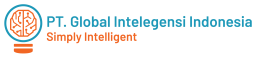
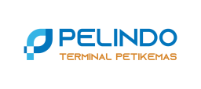
TOS & Infrastruktur IT
Dermaga 204 — JICT 2
Roadmap Kapasitas Dermaga 204
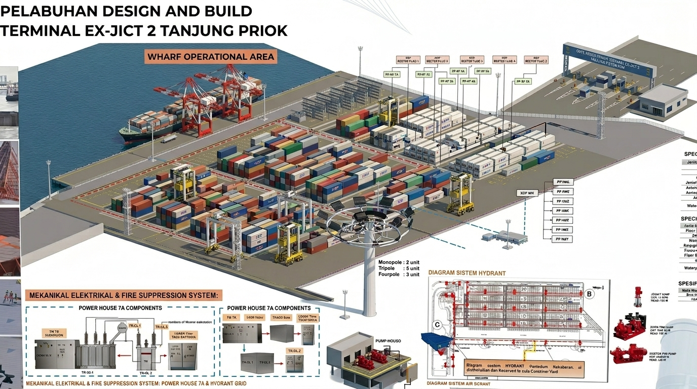
Posisi GII
Penyedia solusi terintegrasi MY-TOS CLOUD + IT infrastructure end-to-end. Mendukung kesiapan dermaga dari kondisi greenfield (tanpa fiber/power IT) menuju operasional komersial dengan high-availability design dan industrial-grade field devices.
Lingkup Solusi
- Cloud TOS dual-AZ (AWS) + RDS, ElasticCache
- Backbone fiber 48-core ring, dual ISP HA
- Autogate 6 lanes, CCTV 48 cam, Wi-Fi 6E
- VMT/HHT 43 unit, UPS Schneider, Video Wall
Hasil Survey Lapangan
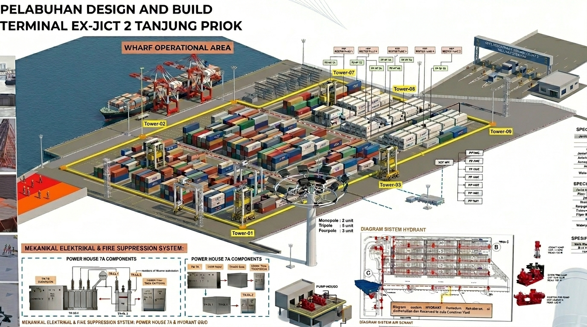
🟦 Lapangan Penumpukan
- Belum tersedia fiber optic & power IT di yard
- High mast tower eksisting belum ada yang terpasang (tidak tersedia)
- Perimeter yard dekat dermaga tanpa infrastruktur
🟨 Office Dermaga
- Belum ada infrastruktur IT di office terminal
- Jalur cable tray tersedia untuk instalasi jaringan
- Membutuhkan integrasi distribusi power → IT devices
Future Plan Dermaga 204
Survey komprehensif berbasis engineering drawing dan spesifikasi desain — memastikan integrasi distribusi sumber listrik ke perangkat IT di seluruh area yard, gate, dan office terminal.
⚡ Distribusi Power
Sumber listrik utama terintegrasi dengan distribusi IT device di yard, tower, gate, dan server room.
🌐 Jalur Fiber
Routing fiber optic mengikuti perimeter container yard dan koneksi inter-building ODC.
🏗️ Tower Eksisting
Memanfaatkan high mast tower dari divisi facility terminal container untuk mounting AP, CCTV, dan SIP horn outdoor.
7 Prinsip Desain Arsitektur
🛡️ High Availability
Dual ISP, active-standby cloud TOS, redundant distribution switch, UPS per node.
🔒 Security Segmentation
VLAN terpisah per domain: OT, CCTV, wireless, autogate, PA, management, server.
🏭 Industrial Grade
Field devices rating IP65/IP67 untuk kondisi outdoor terminal.
🔆 Fiber Backbone
Single Mode 48-core sebagai medium transmisi utama antar node.
📡 Mobile Connectivity
4G/5G primer, Wi-Fi 6E sekunder untuk coverage area operasional.
📊 Centralized Monitoring
Server monitoring untuk network, CCTV, autogate, operasional.
📈 Scalability
Mendukung ekspansi Phase II & III tanpa rekonfigurasi besar.
♻️ Future-proof
Open standards, Autogate, IoT, weighing bridge, AWS cloud-native.
High-Level Network Topology

Infrastruktur Fiber Optik
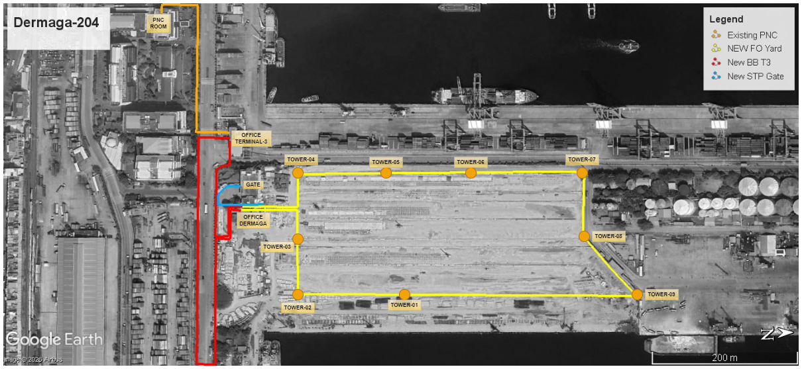
Topologi & Termination
- Ring topology mengikuti perimeter yard (3 fase)
- 9 titik termination di yard + 4 di office + 2 di T-3
- Logical star dari ODC Office, fisik ring untuk failover
Alokasi Core per Tower
- 2 core working (uplink primary) + 2 core spare
- Total aktif: 36 core (9×4) + 12 core spare
- ODC T-3 ↔ ODC Office: 4 ribbon (48 core) backbone trunk
Infrastruktur Jaringan Switch
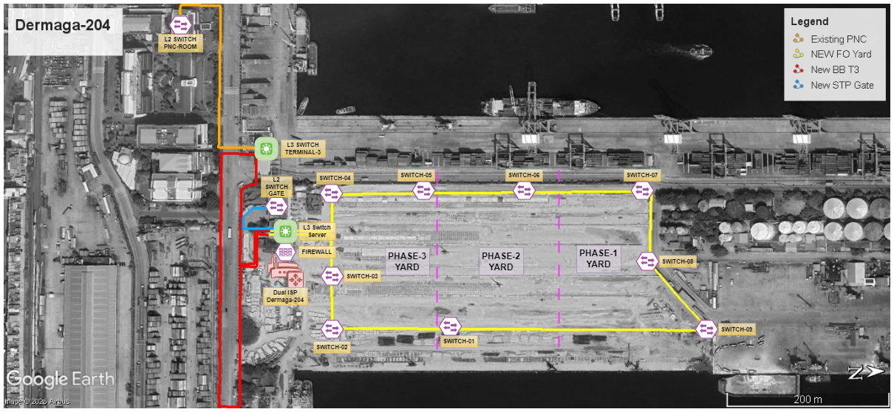
Dual ISP & Failover
Automatic failover via policy routing — ISP-1 primary, ISP-2 secondary. RTO < 60 detik dengan dynamic routing.
High Availability Stack
- Firewall dengan internal HA (cluster HA optional enhancement)
- Distribution switch dual uplink ke firewall via LAG
- UPS backup untuk semua server room, gate, tower, PNC
Kabel Distribusi
- Extension dari Terminal-3 → Office Dermaga
- Office → Gate: STP outdoor cable
- Office → Yard: industrial switch via fiber ring
Wireless Infrastructure
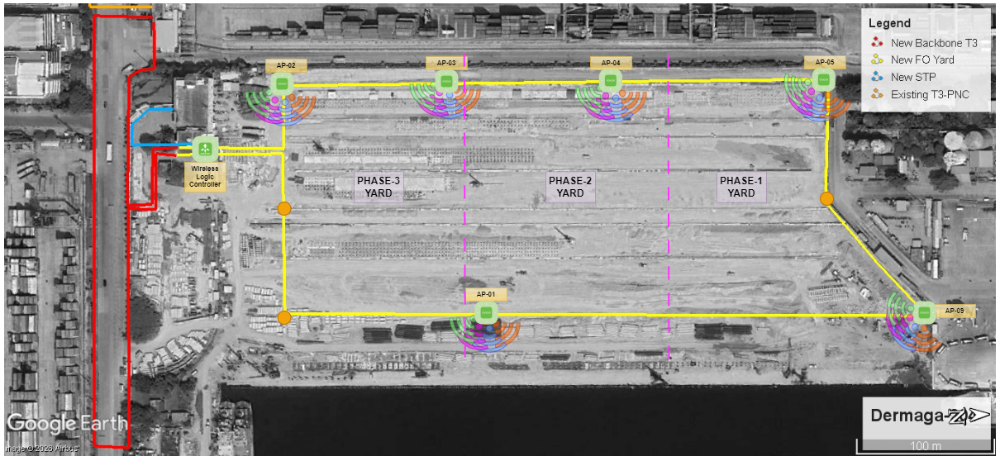
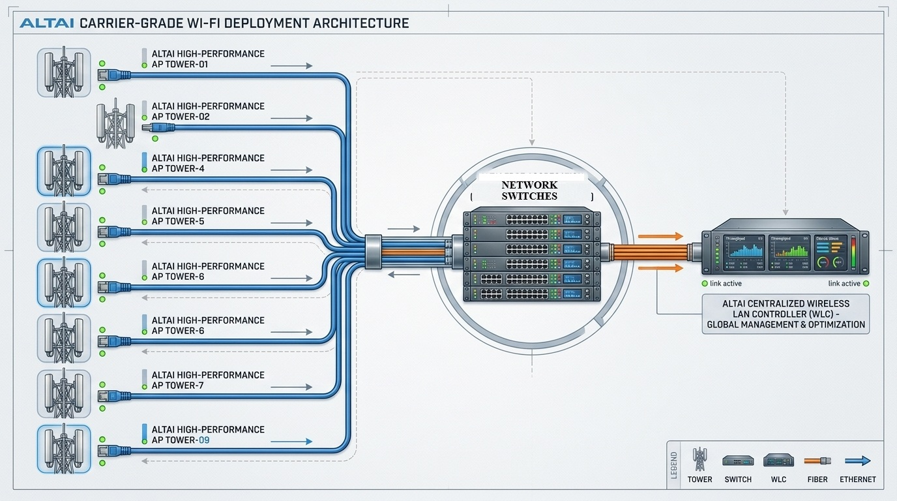
Centralized Controller
Coverage & Tower Strategy
- Radius 100–200m per AP, mount tinggi 25–30m, throughput ≥100 Mbps
- Tower-1, 9: north CY Phase I + berth north
- Tower-7: east berth (QC apron); Tower-6: Phase II mid-yard
- Tower-4, 5: Phase III yard + gate approach (overlap untuk roaming)
Management
Wireless Logic Controller (Server Room, VLAN MGMT) — config, monitoring, firmware, RRM untuk seluruh AP.
VMT & HHT — Mobile Operations
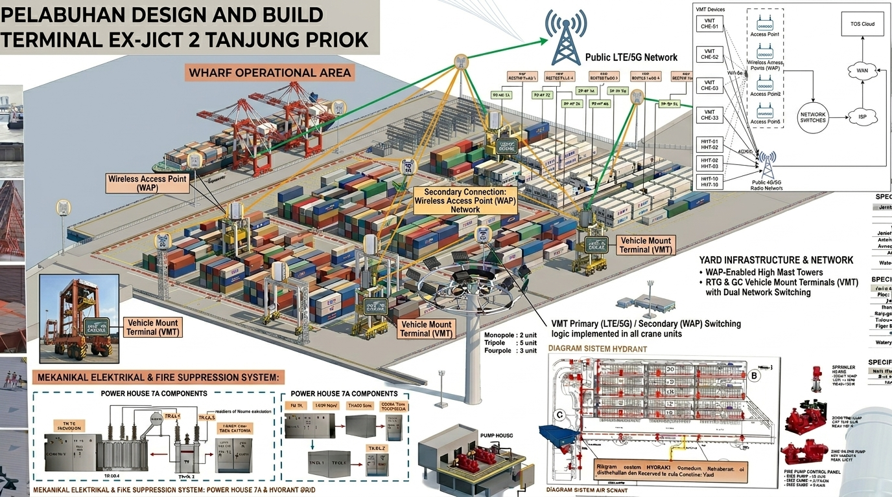
Distribusi per CHE Type
| Jenis CHE | Qty VMT | Karakteristik |
|---|---|---|
| RTG (Rubber Tyred Gantry) | 10 | Mobile in stack yard, Wi-Fi T-1/4/5/6 |
| Reach Stacker (RS) | 3 | Yard reefer / special area |
| Internal Truck (Haulage) | 20 | Active mobile, 4G/5G primer |
Dual-Mode Failover
Wi-Fi 6E saat sinyal kuat (RSSI ≥ −70 dBm), auto fallback ke 4G/5G IoT SIM di luar coverage. Continuous TOS connectivity terjamin.
Autogate System — Per Lane Components
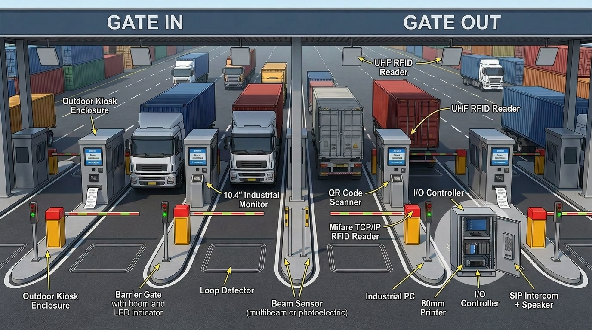
13 Komponen × 6 Lanes
- Outdoor Kiosk Enclosure
- Barrier Gate + Boom LED
- Loop Detector
- Beam Sensor (safety)
- Industrial PC
- Monitor 10.4" Driver
- QR Code Scanner
- UHF RFID Reader (truck)
- Mifare TCP/IP (driver)
- Thermal Printer 80mm
- I/O Controller (relay)
- SIP Intercom + Speaker
- SIP Phone (PNC side)
- +1 SIP PBX (shared)
Gate-In & Gate-Out Scenarios
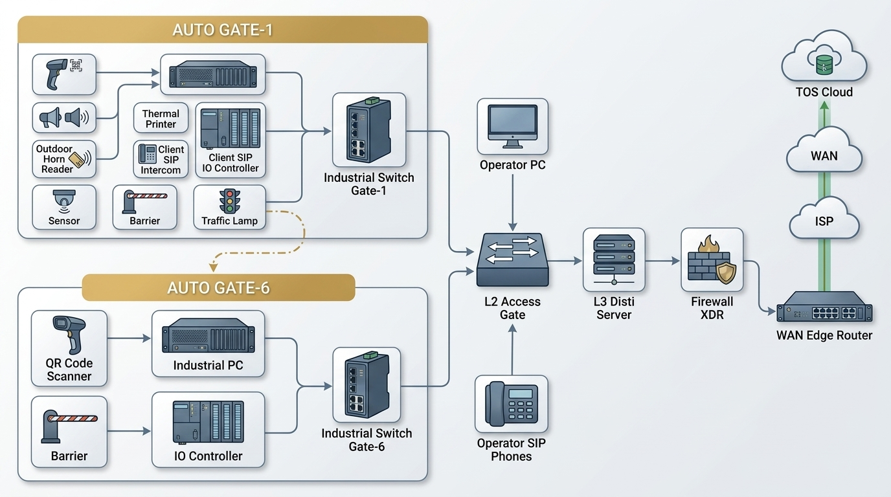
🟢 Gate-IN
🔴 Gate-OUT
Evidence & Audit
Setiap transaksi terekam dengan timestamp video, integrasi ke Milestone XProtect untuk audit trail komprehensif.
CCTV — Hikvision 4K & Milestone XProtect
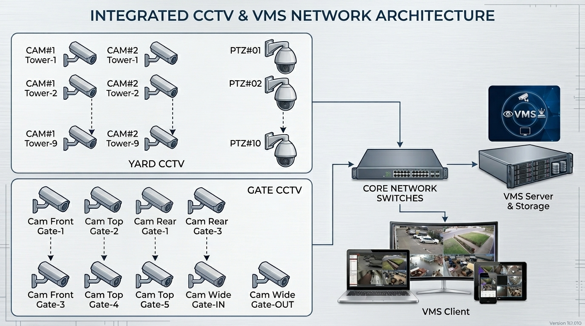
📷 Kamera Hikvision 8MP (4K)
Image quality untuk identifikasi barcode & plate, operator activity monitoring, kompatibel H.265+ (~50% reduction storage).
🎥 Milestone XProtect Professional+
- Unlimited camera per server, multi-server federation
- Multi-screen Smart Client (video wall ready)
- Mobile Client + open platform (LPR/ANPR ready)
💾 NVR Milestone Husky
Purpose-built appliance — Husky M500A / M50A untuk 48 kamera × 8MP × 30 hari retention.
Distribusi PTZ & Fixed Cameras
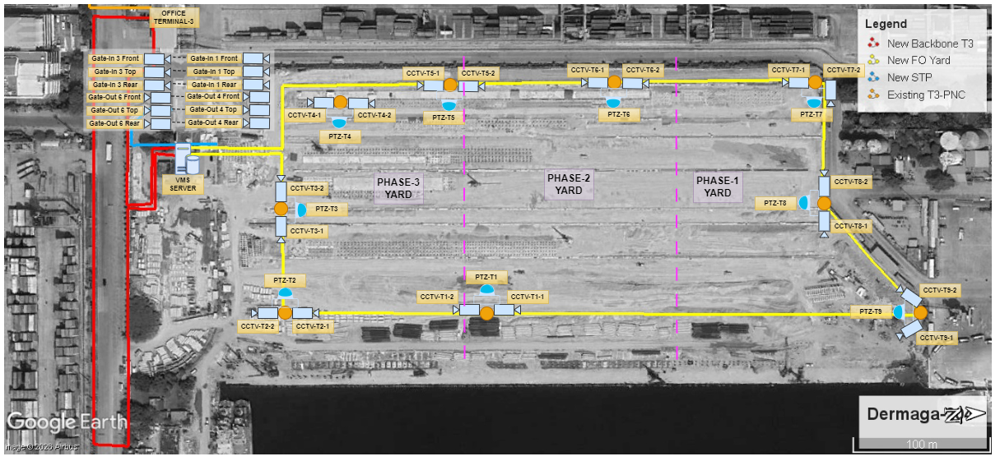
PTZ Strategic Placement (10 units)
| # | Lokasi | Fungsi |
|---|---|---|
| 1 | Tower-1 / Yard Fase I North | Yard north & berth north |
| 2 | Tower-5 / Fase III mid-south | Mid-south transit yard |
| 3 | Tower-6 / Fase II mid | Phase I & II interface |
| 4 | Tower-7 / Dermaga timur | QC apron operation |
| 5 | Tower-9 / Fase I NE | North berth end |
| 6–7 | Gate entrance & exit | Truck overview |
| 8 | Berth mid-area | Backup mid QC |
| 9 | Terminal access road | Perimeter & exit |
| 10 | Server room / indoor | Critical infra |
UPS Schneider — Power Protection
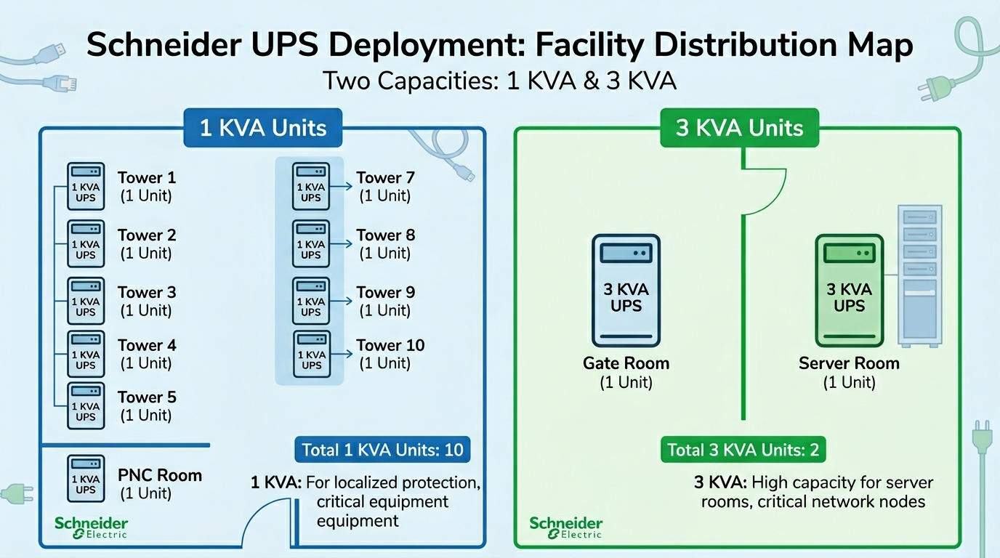
Distribusi UPS per Lokasi
| Lokasi | Qty | Beban Utama |
|---|---|---|
| Tower 1–9 | 9 × 1 KVA | Industrial SW + AP + CCTV + SIP Horn |
| PNC Room | 1 × 1 KVA | Operator PC + monitor + SIP phone |
| Gate Room | 1 × 3 KVA | 6-lane gate distribution |
| Server Room | 1 × 3 KVA | WAN Edge, FW/XDR, 3 Cisco Dist, NVR, Video Wall |
Sistem Video Display & PNC Room
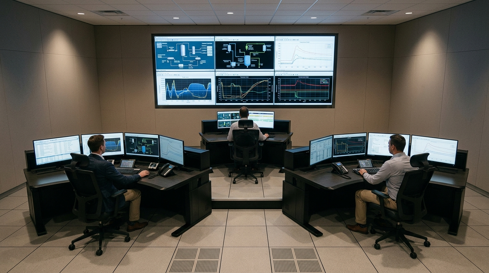
🖥️ Video Wall 6 × 55"
Ultra-narrow bezel (≤3.5mm), formasi semicircle dengan jarak optimal viewing 4–6m, dimmable LED untuk kontrol pantulan.
🎛️ Video Wall Controller
- ≥8 source input (HDMI, DP, IP stream, RGB)
- Layout: full screen, 2×3 grid, custom PiP
- Web GUI · integrasi RTSP dari Milestone VMS
👥 Operator Consoles
Dual 24–27" monitor per operator, supervisor triple monitor, SIP headset, ergonomic desk cable management.
Sistem Public Address — SIP-Based
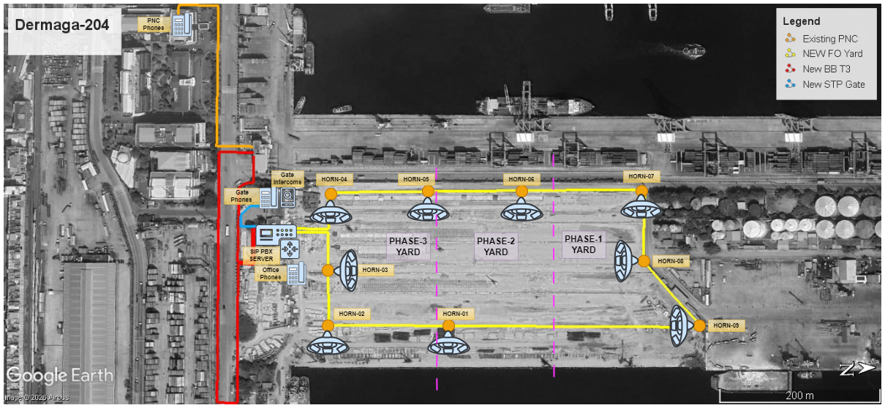
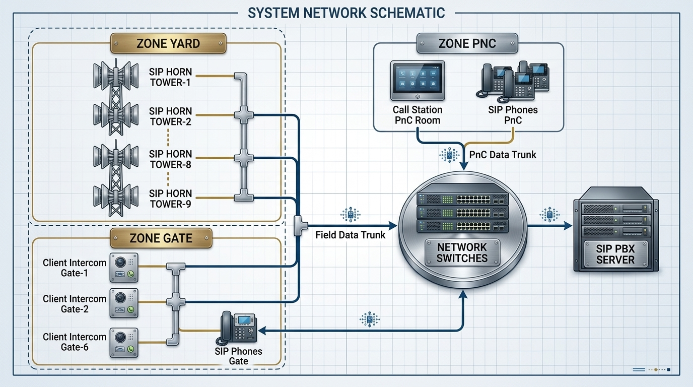
🔊 Arsitektur SIP
Terintegrasi dengan Autogate SIP PBX existing — tidak perlu PBX terpisah. 9 SIP Horn 100W di tower 1–9 + SIP Paging Station di PNC.
Zona Broadcast
| Zona | Perangkat | Use Case |
|---|---|---|
| YARD | 9 SIP Horn 100W | RTG/RS/Truck instructions |
| GATE | 6 outdoor speakers | Driver notifications |
| PNC | SIP phone | Internal communication |
| ALL ZONE | 15 horn + PNC | Emergency broadcast |
Cartrack Fleet Plus — 20 Trucks
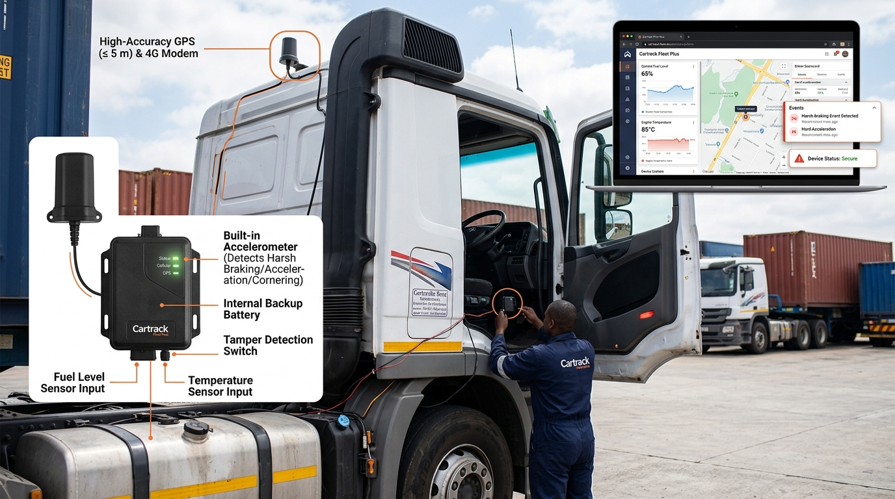
⚙️ Hardware per Truck
- GPS receiver ≤5m akurasi + 4G/LTE modem
- Accelerometer (harsh braking/cornering)
- Fuel level sensor + Temperature sensor
- Backup battery + tamper detection
📍 Platform Features
- Real-time map (30–60s refresh) + route playback
- Geofencing alerts + driver behavior scoring
- Speeding, idle time, fuel consumption tracking
- Mobile app + daily/weekly/monthly reporting
Bill of Materials — Devices & Wireless
| Kategori | Item | Qty | Unit |
|---|---|---|---|
| VMT & HHT | VMT Darveen w/ bracket (IoT SIM) | 33 | Unit |
| HHT Darveen (IoT SIM) | 10 | Unit | |
| CCTV | PTZ Camera CY w/ bracket | 10 | Unit |
| Fixed Camera CY w/ bracket | 20 | Unit | |
| Fixed Camera Gate w/ bracket | 18 | Unit | |
| Wireless | Access Point Outdoor w/ bracket & PoE | 6 | Unit |
| Wireless Logic Controller | 1 | Unit | |
| Autogate (6 lanes) | Barrier Gate + Boom LED | 6 | Unit |
| Kiosk / Enclosure | 6 | Unit | |
| Beam Sensor | 6 | Unit | |
| Loop Detector | 6 | Unit | |
| Industrial PC | 6 | Unit | |
| Monitor 10.4" | 6 | Unit | |
| Intercom + IP Phone | 6 | Unit | |
| SIP PBX Server | 1 | Unit | |
| Speaker Intercom | 6 | Unit | |
| QR Code Scanner | 6 | Unit | |
| RFID Reader | 6 | Unit | |
| Thermal Printer 80mm | 6 | Unit | |
| I/O Controller | 6 | Unit |
BOM — Network, Fiber & Video Wall
| Kategori | Item | Qty | Unit |
|---|---|---|---|
| Network | Switch Cisco 24 Port SFP | 1 | Unit |
| Switch Cisco 24 Port | 2 | Unit | |
| Industrial Switch 8 Port + SFP | 16 | Unit | |
| UPS 3 KVA Rack | 2 | Unit | |
| UPS 1 KVA | 10 | Unit | |
| Rack Mount 20U | 2 | Unit | |
| Patch Panel 24 Port | 2 | Unit | |
| Cable Management | 2 | Unit | |
| Modular | 48 | Pcs | |
| Patch Cord RJ45 1m | 48 | Pcs | |
| Fiber Optik | FO 48 Core Single Mode | 3,950 | Meter |
| HDPE Pipa 1 Inch | 3,950 | Meter | |
| FDU Wall-mount 12 Core w/ pigtail | 10 | Unit | |
| FDU Rack Mount 28 Core w/ pigtail | 3 | Unit | |
| Patch Cord FO SC-LC 2m | 30 | Pcs | |
| Panel Box 800×600 Polyester | 16 | Unit | |
| Video Wall opt | Video Wall Display 55" UNB | 6 | Set |
| Video Wall Controller | 1 | Unit | |
| Wall-mount Bracket Pull-Out | 1 | Unit | |
| HDMI/DP Cable Set | 1 | Set | |
| PC Workstation Operator | 2 | Unit | |
| PC Workstation Supervisor | 1 | Unit | |
| Monitor Operator 24–27" | 3 | Unit |
BOM — PA, GPS Fleet & Installation
| Kategori | Item | Qty | Unit |
|---|---|---|---|
| PA opt | SIP Horn Outdoor 100W | 9 | Unit |
| SIP Paging Station | 1 | Unit | |
| Mounting Bracket Tower | 9 | Unit | |
| PoE+ Injector/Adapter | 9 | Unit | |
| GPS Fleet opt | GPS Tracker 12V Wired | 20 | Unit |
| Fuel Level Sensor | 20 | Unit | |
| Temperature Sensor | 20 | Unit | |
| Cartrack Fleet Plus (1-Year Sub.) | 20 | Device-year | |
| Wiring Harness + Mounting | 20 | Set | |
| Install Material | STP Outdoor Cat 5e Cable | 4 | Roll |
| UTP Cat 6 Cable | 4 | Roll | |
| RJ45 Connector Cat 5e (50 pack) | 5 | Pack | |
| Flexible Clipsal | 2 | Roll | |
| Pipa Clipsal + Sock | 100 | Batang | |
| Support Material | 1 | LS | |
| Installation Services | VMT Installation | 33 | Unit |
| CCTV Installation | 48 | Unit | |
| Access Point Installation | 6 | Unit | |
| Rackmount Installation | 2 | Unit | |
| UPS Installation | 12 | Unit | |
| Box Panel Installation | 16 | Unit | |
| Cisco / Industrial Switch Install | 3 + 16 | Unit | |
| Fiber Optic Laying & HDPE Conduit | 1 | LS | |
| Fiber Optic Splicing | 455 | Core | |
| PA / Fleet / Display Installation | 9 / 20 / 6 | LS |
MY-TOS CLOUD — Dual-AZ Architecture
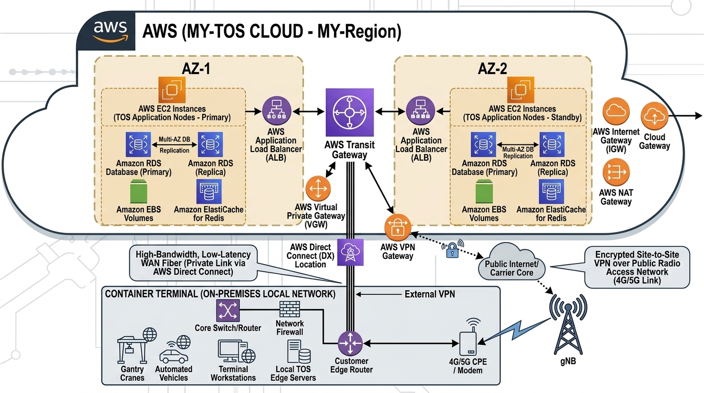
☁️ Two Availability Zones
Primary di AZ-1 automatic failover ke Standby di AZ-2. Amazon RDS Primary + Replica dengan sinkronisasi. ElasticCache for Redis untuk akselerasi data hot-path.
📦 TOS Modules
- Yard Plan · Vessel Schedule
- Autogate Integration
- Multi-Connection Session & Redundancy
🔌 Connectivity
- Primary: Direct Connect dedicated fiber
- Backup: 4G/5G VPN (auto failover via gNB/CPE)
- IoT data via AWS Transit Gateway
Percepatan Implementasi Tahap-1
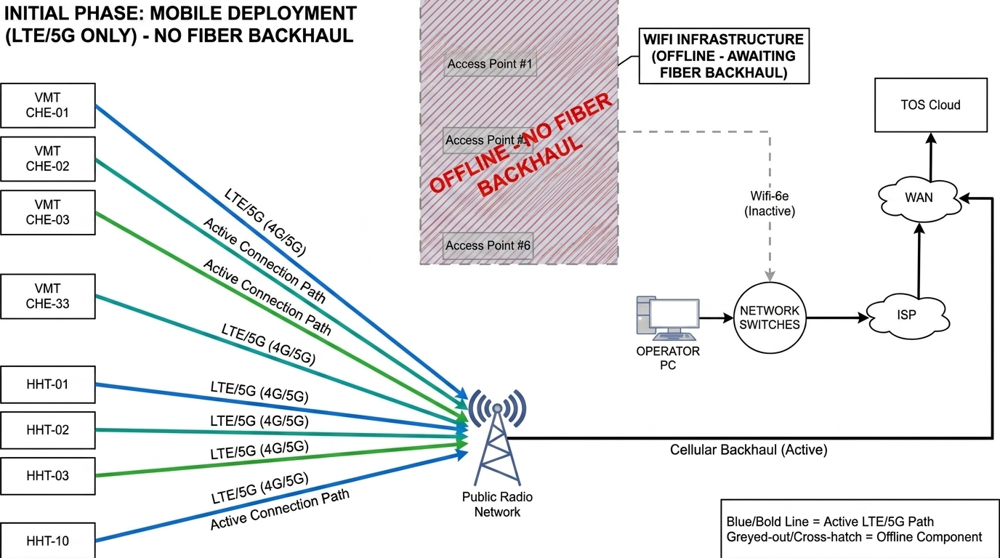
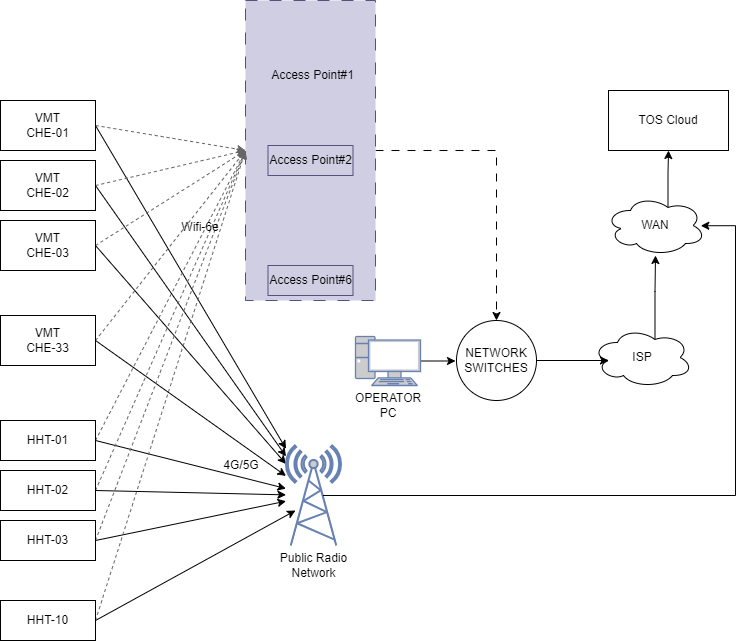
🚛 Heavy Equipment Tahap-1
📱 Mobile Strategy
Samsung Xcover 7" — 9 unit per equipment. Memanfaatkan public LTE/5G selama wireless infra belum siap. Fiber pulling paralel di bulan 1–2.
Percepatan Gate Infrastruktur
Manual Transactions via HHT
Konektivitas LTE/5G public langsung ke MY-TOS CLOUD selama autogate kiosk belum terpasang. Driver & tally clerk dapat melakukan transaksi via aplikasi mobile native, dengan validasi data real-time melalui IoT SIM.
Percepatan Yard Infrastruktur
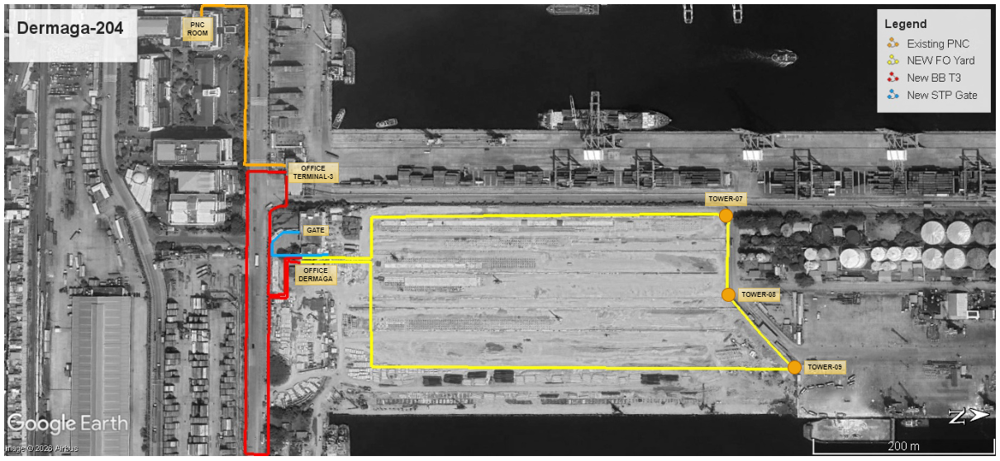
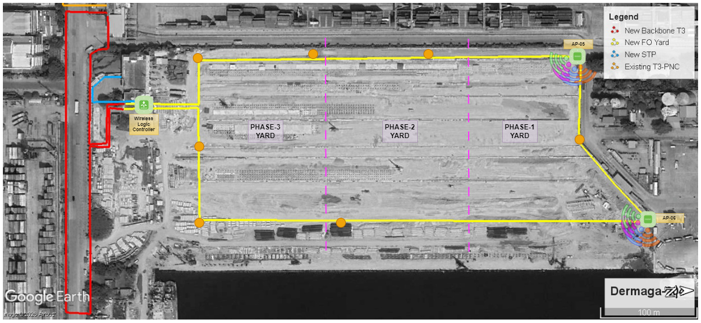
🏗️ Mandatory Towers
Persyaratan utama: tower di area Yard Phase-1 sudah berdiri sebelum fiber pulling untuk CCTV dimulai.
🔌 Network Switch Strategy
- Tower 7, 8, 9 — kandidat utama instalasi industrial switch Tahap-1
- Memastikan distribusi ke perimeter berth & QC apron
- Mendukung CCTV deployment fase awal
Percepatan PNC Infrastruktur
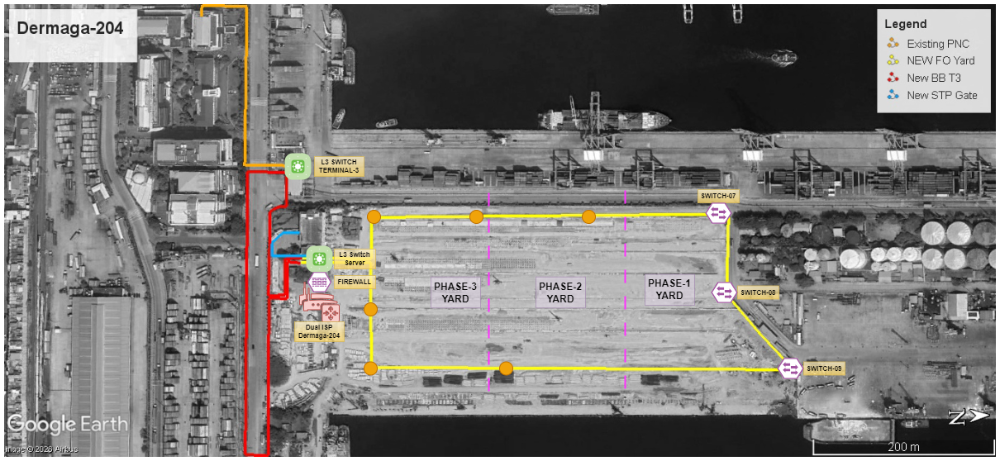
🔗 Dependency Eksisting
Memerlukan fiber eksisting dari PTP office ke Terminal-3 dan Terminal-2 sebagai backbone awal.
🖥️ Local P&C — Terminal-2 Office
- Opsi penempatan Planner & Officer di Terminal-2
- 2 Set PC + Monitor untuk Planner & Officer
- Handy Talky untuk koordinasi operasional
Percepatan Data Center
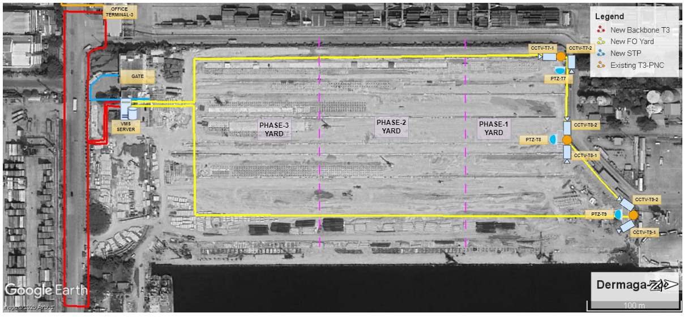
🗄️ Network Rack Installation
- Network Switch + Router + Firewall
- Koneksi dual ISP
- Workstation VMS Milestone
⚡ Mandatory Support
Kondisi server room — temperature & power redundancy adalah prasyarat operasional 24/7.
RACI Matriks Tahap-1
| Deliverable / Scope | GII | SPTP | Catatan |
|---|---|---|---|
| High mast tower setup | I | R / A | Civil contractor SPTP |
| HV / LV switchgear | I | R / A | Distribusi power utama |
| 13 IoT SIM cards | C | R / A | Untuk VMT/HHT/GPS |
| Handy Talkie operators | C | R / A | Komunikasi operasional |
| Existing fiber PTP → T-3 / T-2 | C | R / A | Backbone eksisting |
| Server room — Air Conditioner | I | R / A | Building facility |
| New fiber office ↔ yard & office ↔ T-3 | R / A | I | 3,950m + HDPE |
| STP cable office → gate | R / A | I | Outdoor Cat 5e |
| VMT / HHT, Switches, CCTV, AP, Autogate | R / A | C | Full IT devices |
| Video Wall, Public Address, GPS Fleet | R / A | C | Optional packages |
| MY-TOS Cloud deployment | R / A | C | AWS dual-AZ |
| Operator training MY-TOS | R / A | C | End-user enablement |
| IT infrastructure knowledge transfer | R / A | C | Dokumentasi & handover |
Pemenuhan BOM Tahap-1
| Kategori | Item | Qty Tahap-1 | Full Deploy |
|---|---|---|---|
| Mobile | VMT Samsung Xcover 7" | 9 | 33 |
| HHT Samsung Xcover 7" | 4 | 10 | |
| CCTV | PTZ Camera CY | 3 | 10 |
| Fixed Camera CY | 6 | 20 | |
| Fixed Camera Gate | 18 | 18 (same) | |
| Wireless | AP 802.11ax w/ bracket & PoE | 2 | 6 |
| Wireless Controller | 1 | 1 (same) | |
| Autogate | (Manual via HHT — no kiosk Tahap-1) | 0 | 6 lanes |
| Network | Switch Cisco 24 Port SFP | 1 | 1 |
| Switch Cisco 24 Port | 2 | 2 | |
| Industrial Switch 8 Port + SFP | 3 | 16 | |
| UPS 3 KVA Rack | 1 | 2 | |
| UPS 1 KVA | 3 | 10 | |
| Rack Mount 20U | 1 | 2 | |
| Patch Panel 24 Port | 1 | 2 | |
| Fiber | FO 48 Core + HDPE + termination | Full 3,950m pulling Tahap-1 | |
| Optional | Video Wall · PA · GPS Fleet | Ditunda ke deployment lanjutan | |
Timeline Implementasi Tahap-1
Kick-off
- Material order & delivery
- Fiber + HDPE laying
- MY-TOS Cloud deploy
Splice & Power
- Splicing + OTDR
- ODC + FDU termination
- UPS, VMT, CCTV, Rack
- MY-TOS UAT
★ GO-LIVE Phase-1
- WAN Edge + FW + Core
- VLAN segmentation
- Dual ISP cutover
- MY-TOS GO-LIVE
Tower & Wireless
- 9 tower (AP + horn)
- Remaining CCTV
- Wireless tuning
- 9 UPS commissioning
Gate & PNC
- 6-lane autogate kiosk
- Video wall + console
- SIP PBX + PA
- VMT/HHT training
Handover
- E2E integration test
- UAT SPTP
- Cutover + warranty
- Documentation handover